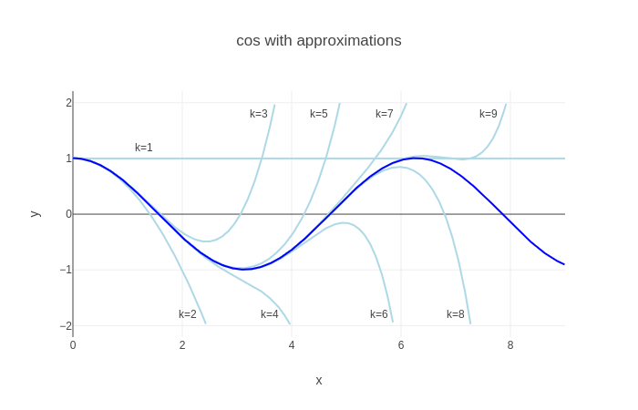
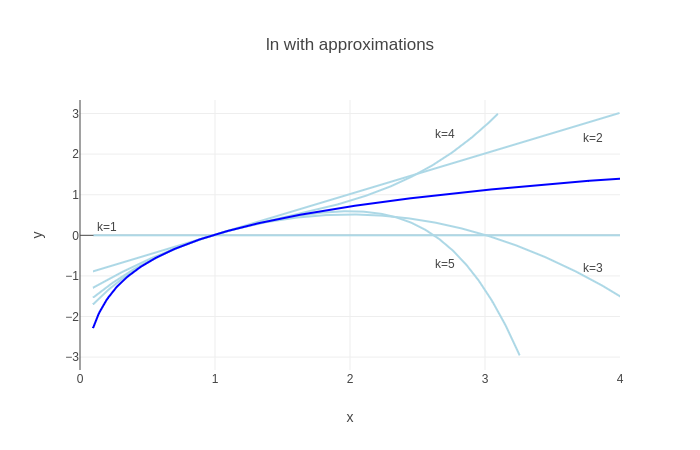

A Maclaurin series is a power series - a polynomial with carefully selected coefficients and an infinite number of terms - used to approximate arbitrary functions with some conditions (e.g. differentiability). The Maclaurin series does this for input values close to 0, and is a special case of the Taylor series which can be used to find a polynomial approximation around any value.
Intuition
Let's say we have a function  and we want to approximate it with
some other - polynomial - function . To make sure that
is as close as possible to , we'll create a function that has
similar derivatives to .
and we want to approximate it with
some other - polynomial - function . To make sure that
is as close as possible to , we'll create a function that has
similar derivatives to .
- We start with a constant polynomial, such that . This approximation is perfect at 0 itself, but not as much elsewhere.
- We want to behave similarly to around 0, so we'll
set the derivative of our approximation to be the same as the derivative
of at 0; in other words . This approximation
will be decent very close to 0 (at least in the direction of the slope),
but will become progressively worse as we get farther away from 0.
- We continue this process, by setting the second derivative to be
, the third derivative to be
and so on, for as many terms as we need to achieve a good approximation in
our desired range. Intuitively, if many derivatives of are
identical to the corresponding derivatives of at some point,
the two functions will have very similar behaviors around that point [1].
The full Maclaurin series that accomplishes this approximation is:
We'll get to how this equation is found in a moment, but first an example that demonstrates its approximation capabilities. Suppose we want to find a polynomial approximation for . Following the definition of the Maclaurin series, it's easy to calculate:
(try it as an exercise).
The dark blue line is the cosine function . The light blue lines are successive approximations, with k terms of the power series included:
- With k=1, since that's just the value of at 0.
- With k=2, , and indeed the line looks parabolic
- With k=3 we get a 4th degree polynomial which tracks the function better, and so on
With more terms in the power series, the approximation resembles more and more, at least close to 0. The farther away we get from 0, the more terms we need for a good approximation [2].
How the Maclaurin series works
This section shows how one arrives at the formula for the Maclaurin series, and connects it to the intuition of equating derivatives.
We'll start by observing that the Maclaurin series is developed around 0 for a good reason. The generalized form of a power series is:
To properly approximate a function, we need this series to converge; therefore, it would be desirable for its terms to decrease. An x value close to zero guarantees that becomes smaller and smaller with each successive term. There's a whole section on convergence further down with more details.
Recall from the Intuition section that we're looking for a polynomial that
passes through the same point as at 0, and that has derivatives
equal to those of at that point.
Let's calculate a few of the first derivatives of ; the function itself can be considered as the 0-th derivative:
Now, equate these to corresponding derivatives of at .
All the non-constant terms drop out, and we're left with:
So we can set the coefficients of the power series, generalizing the denominators using factorials:
Which gives us the definition of the Maclaurin series:
Taylor series
The Maclaurin series is suitable for finding approximations for functions around 0; what if we want to approximate a function around a different value? First, let's see why we would even want that. A couple of major reasons come to mind:
- We have a non-cyclic function and we're really interested in approximating it around some specific value of x; if we use Maclaurin series, we get a good approximation around 0, but its quality is diminishing the farther away we get. We may be able to use much fewer terms for a good approximation if we start it around our target value.
- The function we're approximating is not well behaved around 0.
It's the second reason which is most common, at least in calculus. By "not well behaved" I mean a function that's not finite at 0 (or close to it), or that isn't differentiable at that point, or whose derivatives aren't finite.
There's a very simple and common example of such a function - the natural logarithm . This function is undefined at 0 (it approaches ). Moreover, its derivatives are:
None of these is defined at 0 either! The Maclaurin series won't work here, and we'll have to turn to its generalization - the Taylor series:
This is a power series that provides an approximation for around
any point a where is finite and differentiable. It's easy to use exactly the
same technique to develop this series as we did for Maclaurin.
Let's use this to approximate around , where this function is well behaved. and substituting into its derivatives (as listed above) at this point, we get:
There's a pattern here: generally, the n-th derivative at 1 is with an alternating sign. Substituting into the Taylor series equation from above we get:
Here's a plot of approximations with the first k terms (the function itself is dark blue, as before):
While the approximation looks good in the vicinity of 1, it seems like all approximations diverge dramatically at some point. The next section helps understand what's going on.
Convergence of power series and the ratio test
When approximating a function with power series (e.g. with Maclaurin or Taylor series), a natural question to ask is: does the series actually converge to the function it's approximating, and what are the conditions on this convergence?
Now it's time to treat these questions a bit more rigorously. We'll be using the ratio test to check for convergence. Generally, for a series:
We'll administer this test:
And check the conditions for which , meaning that our series converges absolutely.
Let's start with our Maclaurin series for :
Ignoring the constant term, we'll write out the ratio limit. Note that because of the absolute value, we can ignore the power-of-minus-one term too:
Since the limit contents are independent of x, it's obvious that that for any x. This means that the series converges to at any x, given an infinite number of terms. This matches our intuition for this function, which is well-behaved (smooth everywhere).
Now on to with its Taylor series around . The series is:
Once again, writing out the ratio limit:
To converge, we require:
The solution of this inequality is . Therefore, the series converges to only in this range of x. This is also what we observe in the latest plot. Another way to say it: the radius of convergence of the series around x=1 is 1.
| [1] | If this explanation and the plot of following it don't convince you, consider watching this video by 3Blue1Brown - it includes more visualizations as well as a compelling alternative intuition using integrals and area. |
| [2] | Note that since is cyclic, all we really need is good approximations in the range . Our plot only shows the positive x axis; it looks like a mirror image on the negative side, so we see that a pretty good approximation is achieved by the time we reach k=5. This is also a good place to note that while Maclaurin series are important in Calculus, it's not the best approximation for numerical analysis purposes; there are better approximations that converge faster. |